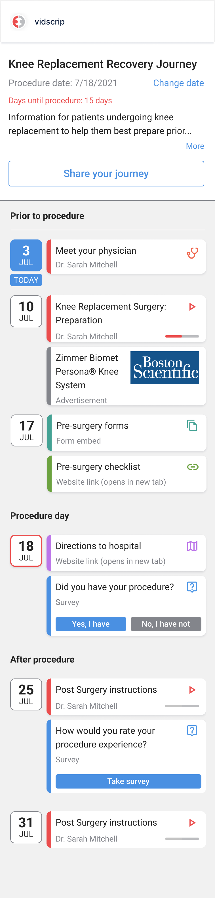
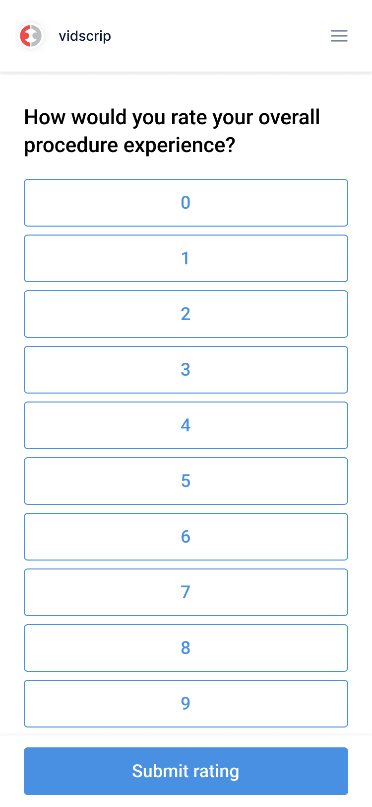

A patient journey scattered across text messages.
Surgical patients need different information at specific moments: one week before surgery, the day after discharge, and throughout recovery. Vidscrips are short videos recorded by healthcare providers and scheduled from the patient's surgery date. Each one arrives from the patient's own doctor at the relevant moment.
The delivery mechanism was the problem. Everything arrived as scheduled text messages, so a patient's entire journey lived as a pile of links in their SMS inbox. There was no way to see the whole path, no sense of where you were on it, and nothing to return to when the date changed.
One timeline, start to finish.
We designed the patient journey page: a single landing page for each enrolled patient, built around a line that maps every key moment from preparation through recovery. A "today" marker keeps the patient oriented against their procedure date, and moments along the line open videos, ask questions, link resources, or offer downloads.
The answers do real work. Confirming your procedure happened can auto-enroll you in a recovery program. Entering a new surgery date reshuffles every moment on the timeline. The same mechanics let providers collect satisfaction scores without a separate survey tool.



Built to be shared.
Recovery is a family project, so every journey page has a short link a patient can hand to friends and caregivers by text, email, or social. Reminders still go out through whatever channel the patient prefers, but now they all point back to one place. Enrollment got the same treatment: pick your doctor, pick your program, enter your date, and land directly on your journey.
Results
- One page replaced a scheduled stream of disconnected text messages as the patient's hub.
- Patients reschedule their own date and the whole timeline reflows around it.